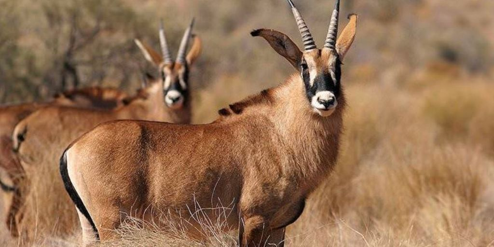

About the Gemsbok
The gemsbok or gemsbuck (Oryx gazella) is a large antelope in the Oryx genus. Native to the arid regions of Southern Africa, such as the Kalahari Desert, some authorities formerly included the East African oryx as a subspecies. The gemsbok is depicted on the coat of arms of Namibia, where the population is estimated at 373,000.
The name "gemsbok" in English comes from the Afrikaans word gemsbok, which itself is derived from the Dutch name of the male chamois. Though they share facial pattern similarities, chamois and oryx are not closely related.
Where Will You Find Them?
You will find the gemsboks just beyond Panda Canyon.